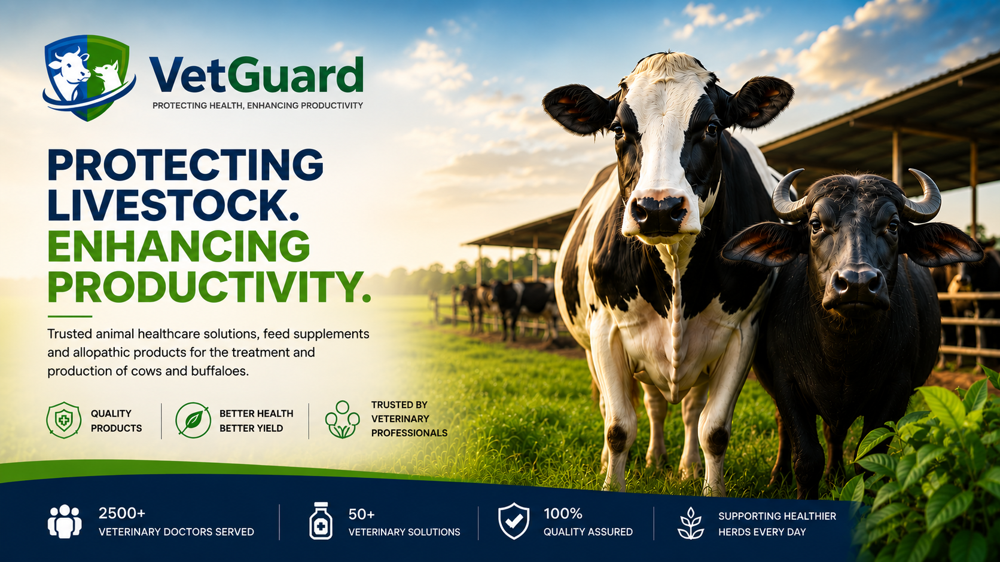

At VetGuard, we partner with veterinary professionals by providing high-quality medicines, nutritional supplements, and livestock healthcare solutions. Our mission is to support veterinarians with reliable products that improve treatment outcomes, strengthen preventive care programs, and enhance livestock productivity.
By combining scientific innovation with practical field applications, we help veterinary doctors deliver better health and performance for cattle and buffalo populations.
When veterinarians succeed, farms thrive.
Effective formulations for disease prevention, treatment, recovery, and herd health management.
Scientifically balanced supplements that support immunity, fertility, growth, and productivity.
Specialized products designed to improve milk yield, reproductive efficiency, and animal performance.
Proactive solutions that help veterinarians reduce disease risk and promote long-term herd health.
Manufactured according to stringent quality standards for consistent clinical performance.
Products developed to meet modern livestock healthcare challenges.
Proven effectiveness in diverse farming and veterinary environments.
Committed to helping veterinarians achieve better treatment outcomes and client satisfaction.